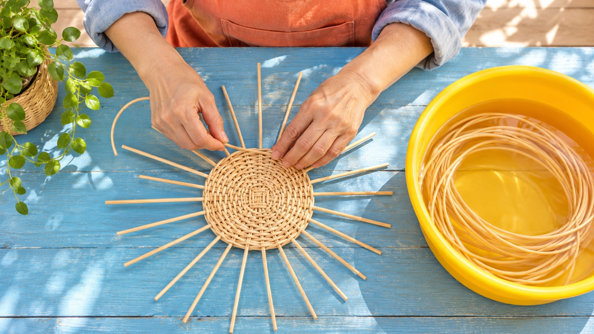

買過的課都在這裡，從上次停下的地方繼續。
已完成 14／28 單元 ‧ 50%
林講師林子謙
上次看到 3-2 從土球到碗：拇指下壓的角度 07:18

已完成 1／16 單元 ‧ 6%
李講師李映蓉
上次看到 1-2 泡藤：藤條要泡多久才好編 02:35
已完成 18／18 單元 ‧ 100%
鄭講師鄭亦寧
2026/10/04 完課
設計稿狀態示意
還沒買過課時，統計與分頁籤都不顯示，課程區只留這個空狀態；標題與「購買紀錄」連結保留。
我的課程
你還沒有進行中的課程，先從一支免費試看開始。
登入後就能開始上課，馬上註冊只要 30 秒。
忘記密碼？
還沒有帳號？立即註冊